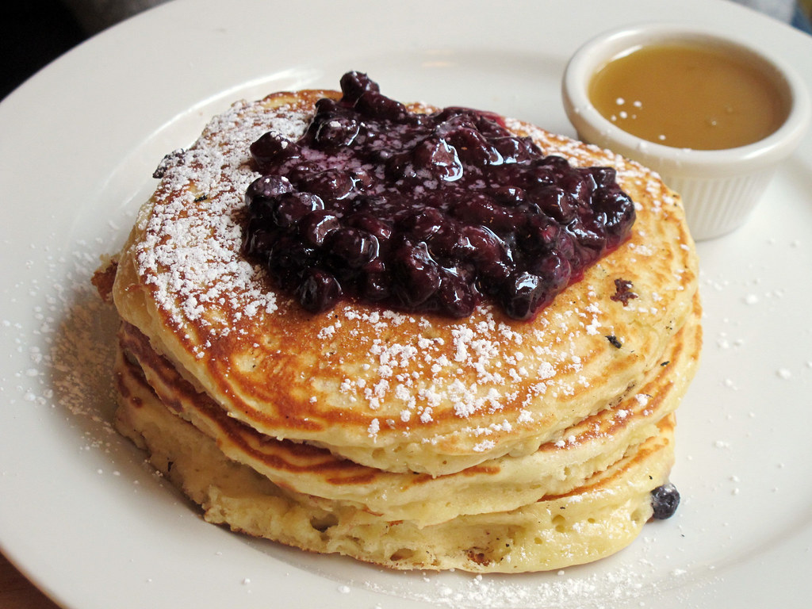

Blueberry Pancakes
Click here to return home.

One of my personal favourites... blueberry pancakes!
Do they need much of an introduction? I don't think so... let's get straight into the recipe.
Ingredients
- Flour
- Butter
- Sugar
- Milk
- Eggs
- Blueberries
- Maple Syrup
Steps
- Whisk together the wet ingredients.
- Add the dry ingredients and mix well.
- Heat up a pan to a medium-high, then turn down to a medium.
- Add a knob of butter.
- Add the mix and flip after risen and golden-brown.